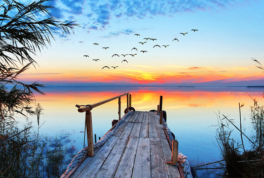

<!--CONTENEDOR DE IMAGEN-->
<figure>
        
    <!--dESCRIPCIÓN DE IMAGEN-->
    <figcaption>Montaña en el Lago Toluca</figcaption>
</figure>

<picture>
    <source media="(min-width:650px)" srcset="./img/1.jpg">
    <source media="(min-width:465px)" srcset="./img/2.jpg">
    
</picture>

<picture>
    <source media="(max-width:500px)" srcset="imagen1-800w">
    <source media="(min-width:1000px)" srcset="imagen1-800w">
</picture>
